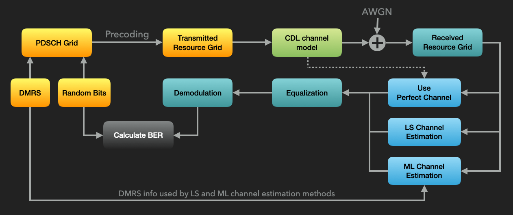
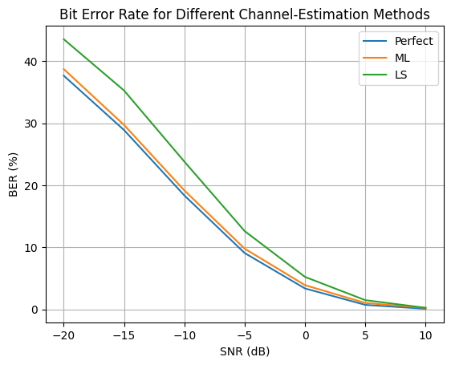

Evaluating the Trained Channel Estimator
Now that we have a trained model, we can use it inside the communication pipeline and compare its performance with two baselines: perfect channel knowledge and NeoRadium’s least-squares (LS) channel estimation with interpolation.
The goal of this notebook is to provide a simple end-to-end tutorial, not a complete system-level benchmark. Therefore, the evaluation uses one representative channel and link configuration. This makes the comparison easy to reproduce and interpret, while the training dataset from the previous notebooks still exposes the model to a wider range of CDL profiles and channel parameters.
The following diagram shows the pipeline used to evaluate the deep-learning-based channel estimator.

Let’s start by importing the required modules.
[1]:
import numpy as np
import scipy.io
import time
import matplotlib.pyplot as plt
from neoradium import BandwidthPart, PDSCH, CdlChannel, AntennaPanel, Grid, random
import torch
from torch import nn
[2]:
# ----------------------------------------------------------------------------------------------------------------------
# Define the residual block
class ResBlock(nn.Module):
# ------------------------------------------------------------------------------------------------------------------
def __init__(self, inDepth, midDepth, outDepth, kernel=(3,3), stride=(1,1)):
super().__init__()
if isinstance(stride, int): stride = (stride, stride)
if isinstance(kernel, int): kernel = (kernel, kernel)
self.path1 = nn.Sequential(
nn.Conv2d(inDepth, midDepth, 1, stride, padding='valid'), # 1x1 conv.
nn.BatchNorm2d(midDepth),
nn.ReLU(True),
nn.Conv2d(midDepth, midDepth, kernel, padding='same'),
nn.BatchNorm2d(midDepth),
nn.ReLU(True),
nn.Conv2d(midDepth, outDepth, 1, padding='valid'), # 1x1 conv.
nn.BatchNorm2d(outDepth))
self.path2 = None
if ((stride != (1,1)) or (inDepth!=outDepth)):
self.path2 = nn.Sequential(nn.Conv2d(inDepth, outDepth, 1, stride), # 1x1 conv.
nn.BatchNorm2d(outDepth) )
# ------------------------------------------------------------------------------------------------------------------
def forward(self, x):
out = (self.path1(x) + x) if self.path2 is None else (self.path1(x) + self.path2(x))
out = nn.ReLU(True)(out)
return out
# ----------------------------------------------------------------------------------------------------------------------
# Define the ChEstNet model
class ChEstNet(nn.Module):
# ------------------------------------------------------------------------------------------------------------------
def __init__(self, device):
super().__init__()
self.inShape = (6, 14, 288)
self.res1 = ResBlock(6, 48, 192, (9,9)) # Residual block with a 9x9 kernel
self.res2 = ResBlock(192, 48, 192, (7,7)) # Residual block with a 7x7 kernel
self.res3 = ResBlock(192, 48, 192, (3,3)) # Residual block with a 3x3 kernel
self.conv = nn.Conv2d(192, 4, 3, padding='same')
self.to(device)
# ------------------------------------------------------------------------------------------------------------------
def forward(self, x):
out = self.res1(x)
out = self.res2(out)
out = self.res3(out)
out = self.conv(out)
return out
@property
def device(self): return next(self.parameters()).device
# ------------------------------------------------------------------------------------------------------------------
def infer(self, samples, toNumpy=True):
self.eval() # Set the model to evaluation mode
if type(samples) is np.ndarray: samples = torch.from_numpy(samples)
with torch.no_grad():
if toNumpy: return self(samples.to(self.device)).cpu().numpy()
return self(samples.to(self.device))
# ------------------------------------------------------------------------------------------------------------------
def loadParams(self, fileName):
if type(fileName)==str:
self.load_state_dict( torch.load(fileName, weights_only=True, map_location=self.device) )
else:
self.load_state_dict(fileName)
Loading the Trained Model
Here we define the channel-estimator model and initialize it with the trained parameters saved during training.
For clarity, the model definition is repeated in this notebook. In a cleaned-up project or reusable package example, this definition should be moved to a shared Python module and imported by both the training and evaluation notebooks. That avoids accidental differences between the architecture used for training and the architecture used for evaluation.
[3]:
# Check GPU availability
device = "cuda" if torch.cuda.is_available() else "mps" if torch.backends.mps.is_available() else "cpu"
print("Using the '%s' device."%({'cuda':'Cuda', 'mps':'Metal','cpu':'CPU'}[device]))
# Instantiate the model and move it to the target device
model = ChEstNet(device)
# Load the trained model parameters
model.loadParams('Models/ChEstModelWeights.pth');
model.eval(); # Set the model to evaluation mode
Using the 'Cuda' device.
The mlChanEst Function
The mlChanEst function below receives a PDSCH object, the received resource grid, and the trained model. It uses the model to estimate the effective channel for each receive antenna and then combines the per-antenna predictions into a 4-D L x K x Nr x Nl effective channel matrix.
This ML estimator returns the channel estimate only. By contrast, NeoRadium’s LS estimator also returns an error-variance estimate that can be used by the equalizer. In this tutorial, we keep the ML interface simple and pass only the predicted channel to the receiver. This is sufficient for demonstrating the channel-estimation workflow and BER comparison, but a more complete receiver could also estimate an ML-based error variance, for example from the DMRS residuals.
[4]:
def mlChanEst(pdsch, rxGrid, model):
dmrsIdx = pdsch.grid.getReIndexes("DMRS") # This contains the locations of DMRS values
rr, ll, kk = rxGrid.shape # Number of RX antennas, symbols, and subcarriers
ls = np.unique(dmrsIdx[1]) # Unique DMRS symbols
ks = np.unique(dmrsIdx[2]) # Unique DMRS subcarriers
samples = np.zeros( (rr, pdsch.numLayers+1, ll, kk), dtype=np.complex128) # Nr x Nl+1 x L x K
for r in range(rr):
samples[r][dmrsIdx] = pdsch.grid[dmrsIdx] # Known DMRS values
samples[r][np.ix_([-1], ls, ks)] = rxGrid[ np.ix_([r], ls, ks) ] # Received grid values at DMRS
# symbol/subcarrier locations
samples = np.concatenate([samples.real, samples.imag],axis=1) # Nr x 2(Nl+1) x L x K
predChan = model.infer(np.float32(samples)) # Nr x 2Nl x L x K (float32)
predChan = predChan[:,:pdsch.numLayers] + 1j*predChan[:,pdsch.numLayers:] # Nr x Nl x L x K (complex-valued)
return np.transpose(predChan, [2,3,0,1])
Evaluation Pipeline
The following cell implements the evaluation pipeline shown above. It runs the simulation three times, using perfect channel knowledge, the ML channel estimator, and the LS channel estimator. The BER results are printed at the end.
The ML estimator is compared with LS interpolation in a fixed tutorial configuration. This is not intended to be an exhaustive generalization study across every channel profile, mobility value, bandwidth, or DMRS pattern. The dataset-level test evaluation in the training notebook provides an additional check on generalization across held-out data.
Also note that the precoder is computed from the true channel for all three methods. This isolates the receiver-side channel-estimation problem and keeps the transmitted signals identical across the comparison. A more realistic closed-loop simulation could use practical transmitter-side CSI or a fixed/codebook precoder, but that would add complexity beyond the scope of this introductory example.
[5]:
numSlots = 500 # Number of slots
snrDbs = range(-20,11,5) # SNR values, in dB, used to evaluate the model
bwp = BandwidthPart(numRbs=24, spacing=15) # Bandwidth part object with 24 PRBs and 15 kHz subcarrier spacing
pdsch = PDSCH(bwp, numLayers=2, modulation="16QAM") # Create a PDSCH object
pdsch.setDMRS(configType=1, additionalPos=2) # Specify the DMRS configuration
results = {} # Dictionary used to store the results
for chanEstMethod in ["Perfect", "ML", "LS"]: # Three channel-estimation methods
results[chanEstMethod] = {}
print(f"\nRunning the end-to-end simulation for \"{chanEstMethod}\" channel estimation, in frequency domain.")
print("SNR(dB) Total Bits Bit Errors BER(%) time(sec.)")
print("------- ---------- ---------- ------ ----------")
for snrDb in snrDbs: # For each SNR value in snrDbs
random.setSeed(123) # Make the results reproducible for each SNR
t0 = time.monotonic() # Start time for each SNR
# Create a CdlChannel object
channel = CdlChannel(bwp, 'C', delaySpread=300, carrierFreq=4e9, dopplerShift=5,
txAntenna=AntennaPanel([2,2], polarization="x"), # 8 TX antennas
rxAntenna=AntennaPanel([1,1], polarization="x"), # 2 RX antennas
seed = 123)
bitErrors = 0
totalBits = 0
for slotNo in range(numSlots):
pdsch.initGrid() # Create and initialize PDSCH's internal grid
numBits = pdsch.getBitCapacity()[0] # Number of bits available in the resource grid
txBits = random.bits(numBits) # Create random binary data
pdsch.setPdschData(txBits) # Map/modulate the data to the resource grid
channelMatrix = channel.getChannelMatrix() # Get the channel matrix
precoder = pdsch.getPrecodingMatrix(channelMatrix) # Get the precoder matrix from the PDSCH object
txGrid = bwp.createGrid(channelMatrix.shape[3]) # Create the transmitted grid
pdsch.precodeTo(txGrid, precoder) # Perform the precoding
rxGrid = txGrid.applyChannel(channelMatrix) # Apply the channel in the frequency domain
rxGrid = rxGrid.addNoise(snrDb=snrDb) # Add noise
errVar = None # Used only with LS channel estimation
if chanEstMethod == "Perfect": # Perfect channel knowledge
estChannelMatrix = CdlChannel.getEffChannel(channelMatrix, precoder) # Ground-truth channel
elif chanEstMethod == "LS": # LS + interpolation channel estimation
estChannelMatrix, errVar = pdsch.estimateChannel(rxGrid)
elif chanEstMethod == "ML": # ML-based channel estimation
estChannelMatrix = mlChanEst(pdsch, rxGrid, model)
else: assert(0)
eqGrid, llrScales = pdsch.equalize(rxGrid, estChannelMatrix, errVar) # Equalization
rxBits = pdsch.getHardBits(eqGrid)[0] # Demodulation (hard decision)
bitErrors += np.abs(rxBits-txBits).sum() # Calculate the number of bit errors
totalBits += numBits
print(f"{snrDb:^7d} {totalBits:<10,d} {bitErrors:<10,d} {bitErrors*100/totalBits:^6.2f}"
f" {time.monotonic()-t0:^10.2f}", end='\r')
channel.goNext() # Prepare the channel model for the next slot
dt = time.monotonic()-t0 # Total time for this SNR
results[chanEstMethod][snrDb] = {"totalBits":totalBits,
"bitErrors":bitErrors,
"BER": bitErrors*100/totalBits,
"Time": dt}
print()
# Plot the results
for i,chanEstMethod in enumerate(['Perfect', 'ML', 'LS']):
bers = [results[chanEstMethod][snrDb]["BER"] for snrDb in snrDbs]
plt.plot(snrDbs, bers, label=chanEstMethod)
plt.legend()
plt.title("Bit Error Rate for Different Channel-Estimation Methods")
plt.grid()
plt.xlabel("SNR (dB)")
plt.xticks(snrDbs)
plt.ylabel("BER (%)")
plt.show()
Running the end-to-end simulation for "Perfect" channel estimation, in frequency domain.
SNR(dB) Total Bits Bit Errors BER(%) time(sec.)
------- ---------- ---------- ------ ----------
-20 14,400,000 5,425,510 37.68 43.65
-15 14,400,000 4,162,364 28.91 44.77
-10 14,400,000 2,643,504 18.36 42.21
-5 14,400,000 1,305,900 9.07 43.79
0 14,400,000 483,837 3.36 44.58
5 14,400,000 102,615 0.71 42.69
10 14,400,000 11,731 0.08 42.31
Running the end-to-end simulation for "ML" channel estimation, in frequency domain.
SNR(dB) Total Bits Bit Errors BER(%) time(sec.)
------- ---------- ---------- ------ ----------
-20 14,400,000 5,577,078 38.73 43.16
-15 14,400,000 4,279,984 29.72 43.30
-10 14,400,000 2,759,149 19.16 43.24
-5 14,400,000 1,406,787 9.77 42.98
0 14,400,000 559,995 3.89 44.44
5 14,400,000 146,251 1.02 45.44
10 14,400,000 33,095 0.23 43.68
Running the end-to-end simulation for "LS" channel estimation, in frequency domain.
SNR(dB) Total Bits Bit Errors BER(%) time(sec.)
------- ---------- ---------- ------ ----------
-20 14,400,000 6,271,772 43.55 42.20
-15 14,400,000 5,080,969 35.28 44.62
-10 14,400,000 3,429,280 23.81 43.49
-5 14,400,000 1,815,666 12.61 42.61
0 14,400,000 752,391 5.22 44.71
5 14,400,000 211,997 1.47 43.02
10 14,400,000 34,210 0.24 44.26

[ ]:
[ ]:
[ ]: